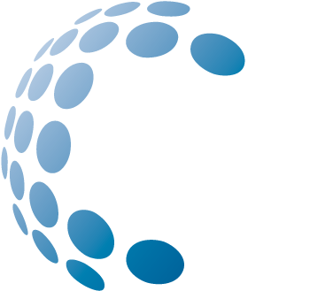

<mat-toolbar color="primary">
  <button mat-icon-button class="example-icon" aria-label="Example icon-button with menu icon">
    
  </button>
  <span>BYTE – Capacitación 2022</span>
  <span class="example-spacer"></span>
  <button mat-button routerLink="/login" *ngIf="!isLoggedIn" class="example-icon favorite-icon" aria-label="Example icon-button with heart icon">
    Iniciar sesión
  </button>
  <button mat-button routerLink="/registro" *ngIf="!isLoggedIn" class="example-icon favorite-icon" aria-label="Example icon-button with heart icon">
    Registrar
  </button>
  <button mat-button *ngIf="isLoggedIn && user" class="example-icon favorite-icon" aria-label="Example icon-button with heart icon">
    <mat-icon>account_circle</mat-icon>
    {{ user.username }}
  </button>
</mat-toolbar>
